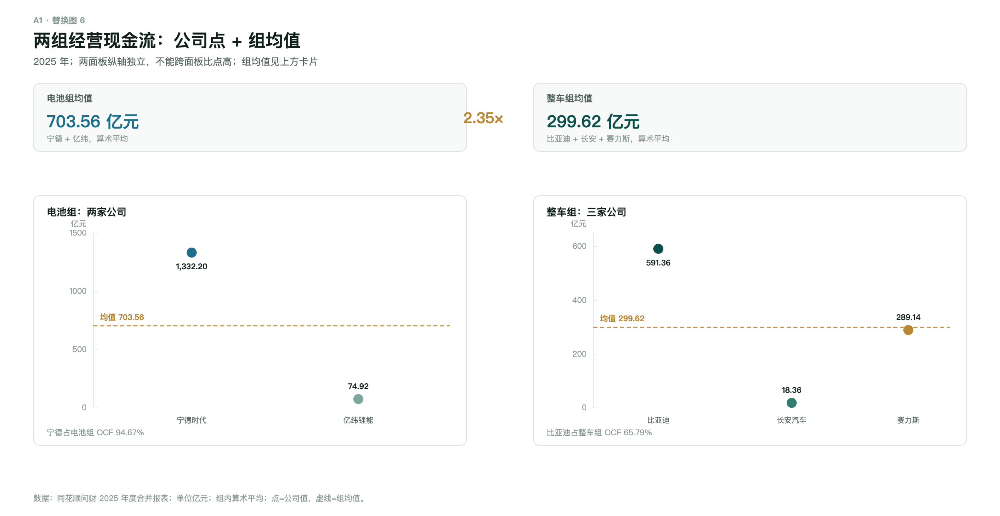
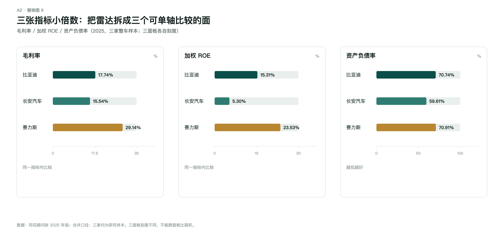
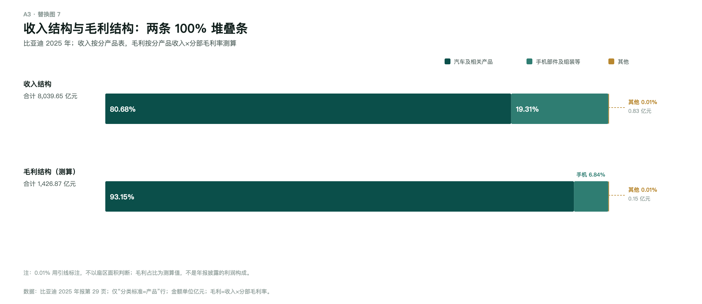
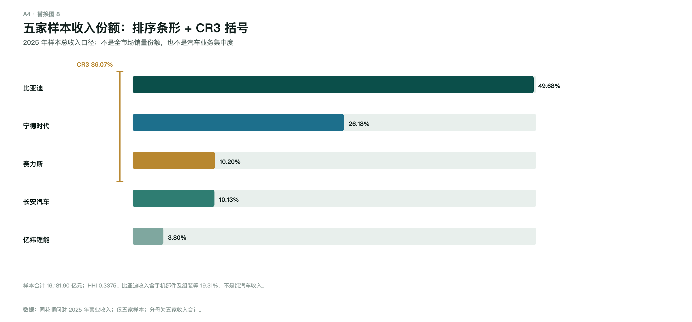
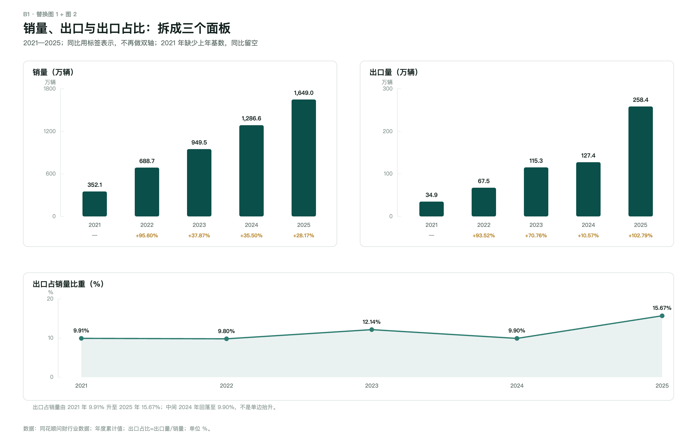
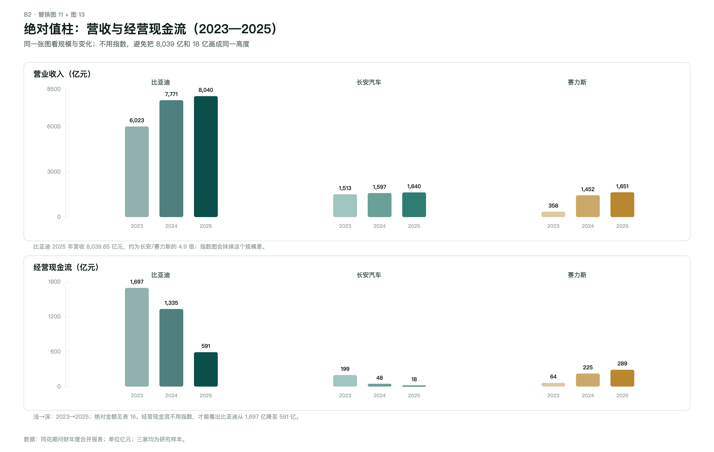
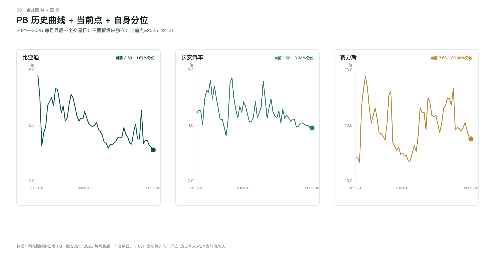
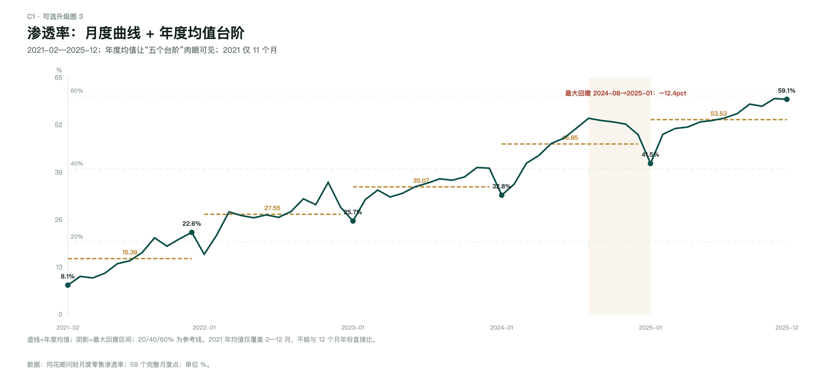
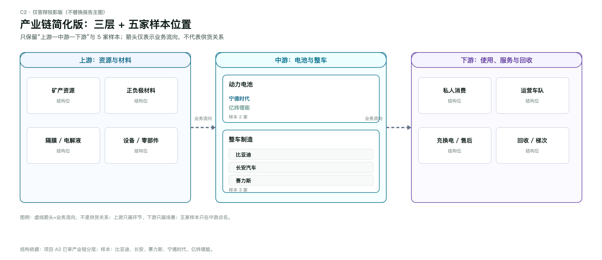
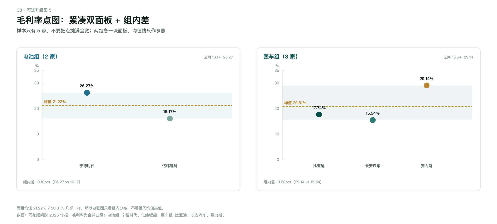

A17 · 新能源汽车 5 问版 · 评审整改候选图
A/B/C 三档候选图：先看“怎么用”，再决定换不换
这份页面只做候选图与加装说明，没有改动报告正文、没有改项目代码。三档按“必改 → 建议改 → 可选”分开，图都是独立 SVG/PNG，先看效果再决定是否替换。
A 档 · 必改（4 张）P0 三处文字口径 + 图 6/9/7/8 的图与结论打架。建议全换。
B 档 · 建议改（3 张）图 1/2 双轴、图 11/13 指数、图 14/15 两点分位。换完答辩少两分钟。
C 档 · 可选（3 张）图 3 加年度台阶、图 4 答辩投影简化版、图 5 毛利率点图。C2 不进报告主图。
A 档：直接替换原图号
B 档：需要合并/改图号
C 档：可选 / 仅答辩
数据边界：只用项目同花顺，未联网补数
一句话结论：A 档 4 张建议直接换；B 档先换 B1、B2、B3 里你最在意的两张，三张全换要改图号；C 档可选/答辩增强，C2 不替换报告主图。全量替换反而会让 31 页结构和图号重新洗牌，先 A 后 B 最稳。
AA 档 · 必改：先解决“图和结论打架”
这四张对应评审里的 P0/P1 硬伤：主语、精度、测算标注，以及图 6/9/7/8 的选型问题。替换原图号，不改章节结构。
A1 · 图 6：两组经营现金流，改成“公司点 + 组均值”
原图只画两根均值柱；正文却说“组均值掩盖龙头集中”。

怎么用
- 直接替换原图 6；位置不动，仍在 Q4 两组样本对比。
- 上方两张均值卡保留“电池组 703.56 / 整车组 299.62 / 2.35×”。
- 下方两个面板：电池组 宁德 1,332.20、亿纬 74.92；整车组 比亚迪 591.36、长安 18.36、赛力斯 289.14。
正文/图注同步
- 正文改：“电池组宁德占组内 OCF 94.67%，整车组比亚迪占 65.79%；均值只作参照。”
- 图注：点=公司值，虚线=组均值；两面板纵轴独立，不跨面板比点高。
- 这样图和“均值掩盖龙头集中”不再互相拆台。
A2 · 图 9：雷达拆成三张单轴小倍数
原图三轴不同量纲，图注自己写“不能按面积排名”，选型自证无效。

怎么用
- 替换原雷达图；三张小面板并排：毛利率 / 加权 ROE / 资产负债率。
- 三家整车固定顺序：比亚迪 → 长安汽车 → 赛力斯，颜色跟公司固定。
- 三面板各自刻度：毛利率 0–35%、ROE 0–30%、负债率 0–100%。
正文/图注同步
- 删掉“雷达三轴刻度不同、不能按面积排名”这句自我否定。
- 正文改：“同一指标内比较：毛利率赛力斯 29.14% 最高；ROE 赛力斯 23.53% 最高；杠杆比亚迪 70.74%、赛力斯 70.91% 接近。”
- 图注：三面板各自刻度，不能跨面板比面积；ROE 为加权平均。
A3 · 图 7：收入/毛利两条 100% 堆叠
原环形图“其他 0.01%”扇区不可见；93.15% 是测算值但全文没标。

怎么用
- 替换原环形图；上行收入结构 8,039.65 亿元，下行毛利结构 1,426.87 亿元（测算）。
- 汽车 80.68% / 手机 19.31% / 其他 0.01%；毛利 93.15% / 6.84% / 0.01%。
- 0.01% 用引线标注，不再靠扇区面积。
正文/图注同步
- 正文所有六位小数改 2 位：80.68% / 19.31% / 0.01%。
- 首次出现 93.15% 时写：“毛利占比为测算值（分产品收入×分部毛利率），不是年报披露的利润构成。”
- 表 11 脚注保留 6 位原始值和 99.999999%，作为审计信息，不要删。
A4 · 图 8：五家样本收入份额，排序条形 + CR3 括号
原图只提醒“不是全市场”，没提醒“比亚迪分子含手机部件 19.31%”。

怎么用
- 替换原份额柱；按 49.68 / 26.18 / 10.20 / 10.13 / 3.80 排序。
- CR3 86.07% 用竖向括号标出“前三名合计”，不是柱长之和。
- 样本合计 16,181.90 亿元；HHI 0.3375 保留。
正文/图注同步
- 正文 CR3 后加：“这是五家样本总收入口径，不是全市场销量份额；比亚迪收入含手机部件及组装等 19.31%，不是纯汽车收入。”
- 图注：分母=五家收入合计；不是汽车业务集中度。
- 这样图 8 的 86.07% 不会被误读成全市场 CR3。
BB 档 · 建议改：把“双轴/指数/两点图”换掉
这三张会动图号：B1 合并图 1+2，B2 合并图 11+13，B3 合并图 14+15。换之前先定图号，TOC 和正文引用一起改。
B1 · 图 1+2：销量、出口、出口占比三联面板
原图柱+双轴折线；结论里最重要的“出口占销量 9.91%→15.67%”只活在文字里。

怎么用
- 方案一：做成一张三联图，保留图 1 号、删除图 2 号；方案二：保留两张图号，上图=销量、下图=出口+占比。
- 同比只做标签，不再做双轴；2021 缺上年基数，同比留空。
- 出口占比单独一栏，9.91 / 9.80 / 12.14 / 9.90 / 15.67。
正文/图注同步
- 正文结论补：“出口占销量由 2021 年 9.91% 升至 2025 年 15.67%，中间 2024 年回落至 9.90%，不是单边抬升。”
- 图注：2021 同比留空；出口占比=出口量/销量；单位万辆/%。
- 如果合并图号，TOC 和图序从 15 图变 14 图，正文“图 2”引用全部改。
B2 · 图 11+13：营收与经营现金流绝对值双面板
原图 2023=100 指数，把 8,039 亿和 18 亿画成同一高度；长安低基数还被放大成 9.24。

怎么用
- 替换图 11、图 13 两张指数图；图 12 毛利率趋势保留，不合并。
- 上：营业收入 2023–2025；下：经营现金流 2023–2025；绝对金额，单位亿元。
- 浅→深=2023→2025；比亚迪 2025 营收 8,039.65 亿元，约为长安/赛力斯的 4.9 倍。
正文/图注同步
- 正文删掉“长安低基数放大 9.24 倍”这类指数表述，改成绝对金额与增速。
- 图注：绝对金额；不用指数；经营现金流从 1,697 亿降到 591 亿，图上直接读到。
- 如果合并图号，图 11/13 变一张，图 12 顺延；TOC 要重算页码。
B3 · 图 14+15：PB 历史曲线 + 当前点 + 自身分位
原图 14 三个点占一整图；图 15 y 轴 0–20 把比亚迪 3.63、长安 1.52 压成平线。

怎么用
- 合并图 14/15 为一张三小图；每家独立纵轴，曲线+当前点+分位。
- 比亚迪 3.63 / 1.67%；长安 1.52 / 3.33%；赛力斯 7.58 / 30.00%。
- n=60 个月末；当前值计入；分位=历史月末 PB≤当前值/60。
正文/图注同步
- 正文说明 2021–2025 跨度：“用长历史回答 2025 单年估值位置，不是把 Q3 改成五年问题。”
- 图注：三面板纵轴独立；当前点=2025-12-31；分位基准为自身 60 个月末。
- 合并后图 14/15 变一张，图号顺延；TOC 重算。
CC 档 · 可选：答辩增强，不动主图
C1 可以进正文，也可以不进；C2 只做答辩投影版，明确不替换报告里的新版三列产业链图 4；C3 是图 5 的可选升级，用来揭示组内分布。
C1 · 图 3：渗透率月度曲线 + 年度均值台阶
原图是全篇最好的一张；唯一可加的是把“五个年度台阶”画出来。

怎么用
- 保留原折线、20/40/60 参考线、回撤阴影；叠年度均值阶梯线。
- 年度均值：15.39 / 27.55 / 35.07 / 46.85 / 53.53。
- 2021 仅 11 个月，阶梯线要断开或标注“仅 2—12 月”。
正文/图注同步
- “五个年度台阶”第一次出现时把五个值写全，不要只藏在表 5。
- “旧自然年口径 4.50pct 会低估 7.90pct”在正文补一句解释，不要只藏在表 6。
- 图注：虚线=年度均值；阴影=最大回撤区间；2021 覆盖 2—12 月。
C2 · 图 4：产业链答辩投影简化版
报告主图仍是新版三列全景；这张只解决“投影到教室屏幕太密”的问题。

怎么用
- 不要把这张替换报告里的图 4；报告主图保留新版三列全景。
- 答辩投影时单独用这张：三层 + 五家样本位置，3 秒能看懂。
- 五家样本只在中游点名：宁德、亿纬在电池；比亚迪、长安、赛力斯在整车。
讲解/图注同步
- 图注：虚线箭头=业务流向，不代表供货关系；上游只画环节、下游只画场景。
- 如果报告主图要加图例，建议加“箭头=价值方向，不是供货关系”，而不是退回三层简图。
- C2 可作为附录或答辩单独页，不占正文图号。
C3 · 图 5：毛利率点图，紧凑双面板 + 组内差
原图两根均值柱把 26.27 vs 16.17、29.14 vs 15.54 的组内差异平均掉了；5 个点不要摊满全宽。

怎么用
- 替换原图 5 可选；紧凑双面板，同一纵轴 0–35%，浅色带标出组内区间，均值虚线只作参照。
- 宁德 26.27 / 亿纬 16.17；比亚迪 17.74 / 长安 15.54 / 赛力斯 29.14。
- 两组均值 21.22 / 20.81 几乎一样，但组内差 10.10pct / 13.60pct，点图一看就出来。
正文/图注同步
- 正文改：“组均值几乎相同，但电池组差 10.10pct、整车组差 13.60pct，均值掩盖了组内分化。”
- 图注：点=公司毛利率，浅色带=组内区间，虚线=组均值；不把均值柱当分布。
- 没有做“研发强度×毛利率”散点：当前报告没有研发强度字段，不补无来源数据。
怎么加进报告：按这个顺序，不会把结构洗乱
| 步骤 | 动作 | 验收点 |
|---|
| 1. 先定图号 | A1–A4 直接替换原图 6/9/7/8；B1 合并图 1+2，B2 合并图 11+13，B3 合并图 14+15；C1 可选替换图 3；C2 不进正文。 | 图号总数会从 15 图变成 14 图（B 档全换）或 13 图（再并 B3），TOC 和正文引用必须一起改。 |
| 2. 先改文字 | 主结论三组数字加主语；正文/图/表精度统一 2 位；93.15% 标“测算”；图 8 补“含手机部件 19.31%”；图 11–15 补跨度说明。 | 不先改文字，换图也救不了“数字没主语”。 |
| 3. 再换 A 档 | 替换图 6/9/7/8 的 SVG 与图注；正文对应句子同步。 | 图 6 不再只有均值柱；图 9 不再写“不能按面积排名”；图 7 0.01% 可见；图 8 CR3 口径写清。 |
| 4. 选做 B 档 | 先换 B1、B2；B3 看页数。每次只动一组，重新渲染 PDF，确认图号/页码/锚点。 | 双轴消失；指数图消失；PB 三点图不再单独占一整图。 |
| 5. 最后加 C 档 | C1 进正文可选；C2 只做答辩投影。报告主图图 4 不降级。 | 答辩投影清楚；报告仍是新版三列全景。 |
| 6. 字号重排 | 候选图按 1200px 设计；进报告 960px 宽时按 960 重排到正文 13px，不要直接把 1200px 图缩到 960px。 | 正文不小于 6.7pt；图注不小于 8pt；投影可读。 |
| 7. 重渲染验收 | A4 PDF，printBackground，页脚页码；检查 0 失效锚点、0 空白页、图号与 TOC 一致。 | 页数可能从 31 变 30/29；不要硬保 31 页，以图号和内容完整为准。 |
加装时最容易犯的错：只换 SVG、不改图注和正文。图 6 换了点图，正文还在说“两根均值柱”；图 9 换了小倍数，图注还写“不能按面积排名”；图 7 换了堆叠，正文还是六位小数。这样评委会认为“图换了、话没换”，比不改更明显。
不建议的做法
1. 不要为了“2024 vs 2025”堆叠补无来源的 2024 分产品数据。 当前报告只有 2025 分产品表；硬补 2024 会破坏“数据只从项目同花顺取”的边界。A3 用 2025 单行收入 + 毛利额第二条，已经够讲结构。
2. 不要把图 4 退回旧三层简图。 新版三列全景是用户明确要的；C2 只做答辩投影，报告主图保留全景，最多加“箭头=价值方向，不是供货关系”的图例。
3. 不要删表 11 的 99.999999% 脚注。 这是审计信息，不是瑕疵；正文/主表统一 2 位，脚注保留 6 位原始值，反而显得严谨。
4. 不要 A/B/C 全量替换后再看。 图号会从 15 图变 13 图，TOC、正文引用、页码全动；先 A 档（4 张）验证，再 B 档逐组合并，C 档最后。